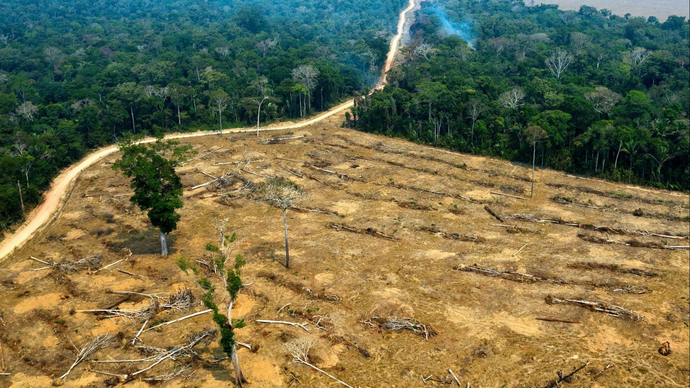

L'adaptation au changement climatique devient elle une urgence absolue ?
Quelques semaines après la publication du dernier rapport du Giec sur le climat,
une nouvelle étude alerte sur la forêt amazonienne.
En analysant la biomasse de cette forêt tropicale
depuis 1991, une équipe germano-britannique a constaté que, depuis les années 2000, elle parvenait de
moins en moins bien à se reconstituer.
Perte des capacités de stockage du carbone
En 2005 et en 2010, à l’occasion d’importantes sécheresses et d’incendies,
la forêt amazonienne était déjà devenue émettrice de carbone au lieu de le capter
comme elle le fait habituellement.
« Mais il s’agissait de phénomènes ponctuels et momentanés.
Ces travaux démontrent que la forêt perd continuellement sa fonction et ses capacités de puits de carbone »,
décrit Lilian Blanc, écologue forestier à l’unité Forêts et sociétés du centre de recherche agronomique
Cirad, qui n’a pas participé à l’étude. « Et cette perte de capacité est linéaire, elle augmente dans
le temps. »

Au printemps 2021, une précédente étude franco-américaine avait déjà noté qu’entre 2010 et 2019 la
partie brésilienne de l’Amazonie était devenue émettrice de carbone, au lieu d’être un puits de stockage,
avec des pertes supérieures de 18 % aux gains. À terme, les spécialistes craignent un basculement :
avec moins d’arbres et une biodiversité en recul, l’effet risque de s’auto-entretenir.
L’assèchement des « rivières volantes »
L’évapotranspiration des arbres (le rejet d’eau par les plantes) sera par
exemple diminuée. La forêt amazonienne produit pour l’instant des « rivières volantes »,
des masses d’eau sous forme de vapeur, transportées par les vents, et qui vont irriguer les terres,
notamment pendant la saison sèche. Entre les incendies, la déforestation et les sécheresses, les arbres
reculent et ceux qui restent « transpirent » moins. Le couvert humide diminue et les rivières volantes
s’assèchent. Et s’il fait plus sec, il y a moins d’arbres, et ainsi de suite.
« La perte de résilience de la forêt amazonienne nous rapproche dangereusement
du point de bascule, et il faut désormais compter en décennie et non en siècle »,
estime Niklas Boers, de l’Institut du climat de Potsdam, en Allemagne, qui a participé aux travaux.
« Ce biome sera sans doute le plus rapide à basculer, bien avant la fonte des calottes glaciaires. »